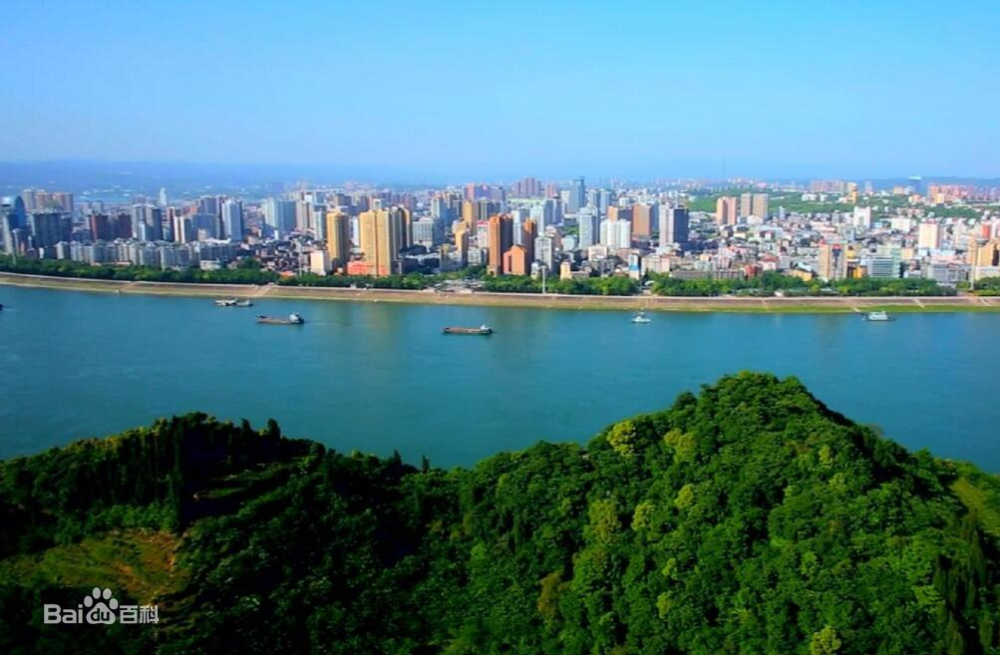
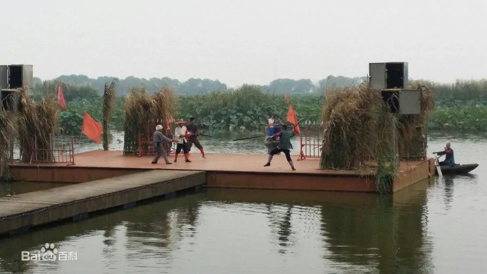
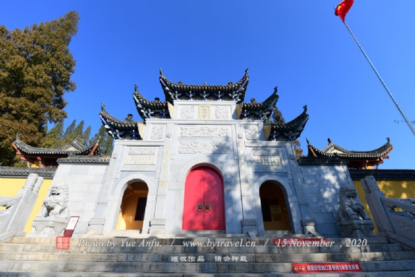

宜昌

宜昌，湖北省地级市、省域副中心城市，是国务院批复确定的中部地区区域性中心城市 市共辖5个市辖区、3个县级市、3个县、2个自治县，总面积2.1万平方千米.
洪湖

洪湖是当今世界上仅存不多的没有被污染的大型淡水湖泊之一，两岸风光秀丽，湖水清澈见底，盛夏季节可以采莲、垂钓，春冬可以猎鸭，是天然的游乐场所。
武穴

武穴位于湖北省东部,面积1246平方公里,人口69.83万,国民生产总值19.56亿元,第一、二、三产业比重为25.6%,42.7%,31.7%.武穴工业基础较好,形成了医药、化工、轻纺、机械、食品、建材等支柱产业,共有工业企业275家,工业产品400多种,63种产品获国、省、部优称号,喹乙醇产量居世界第一位.